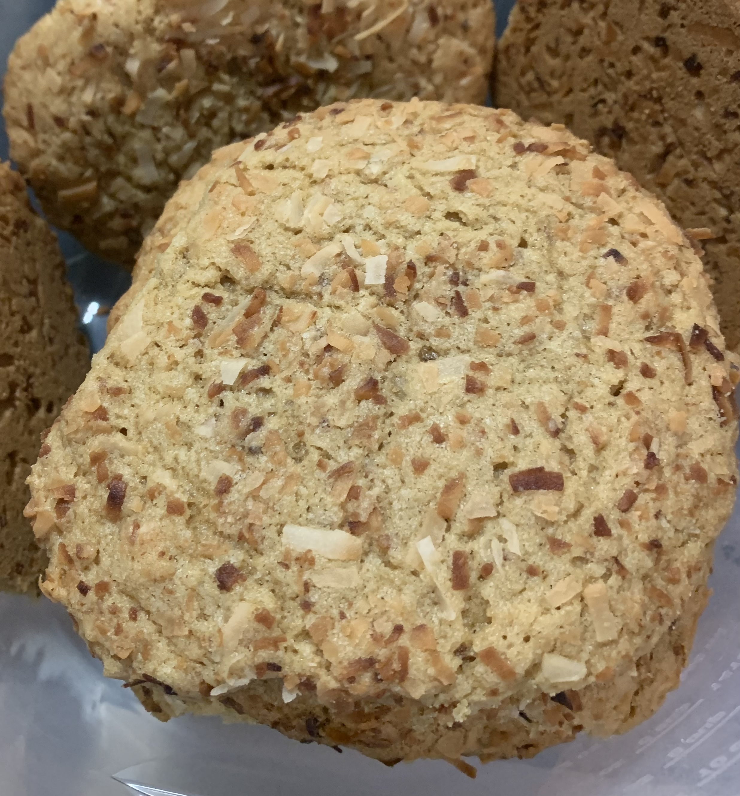
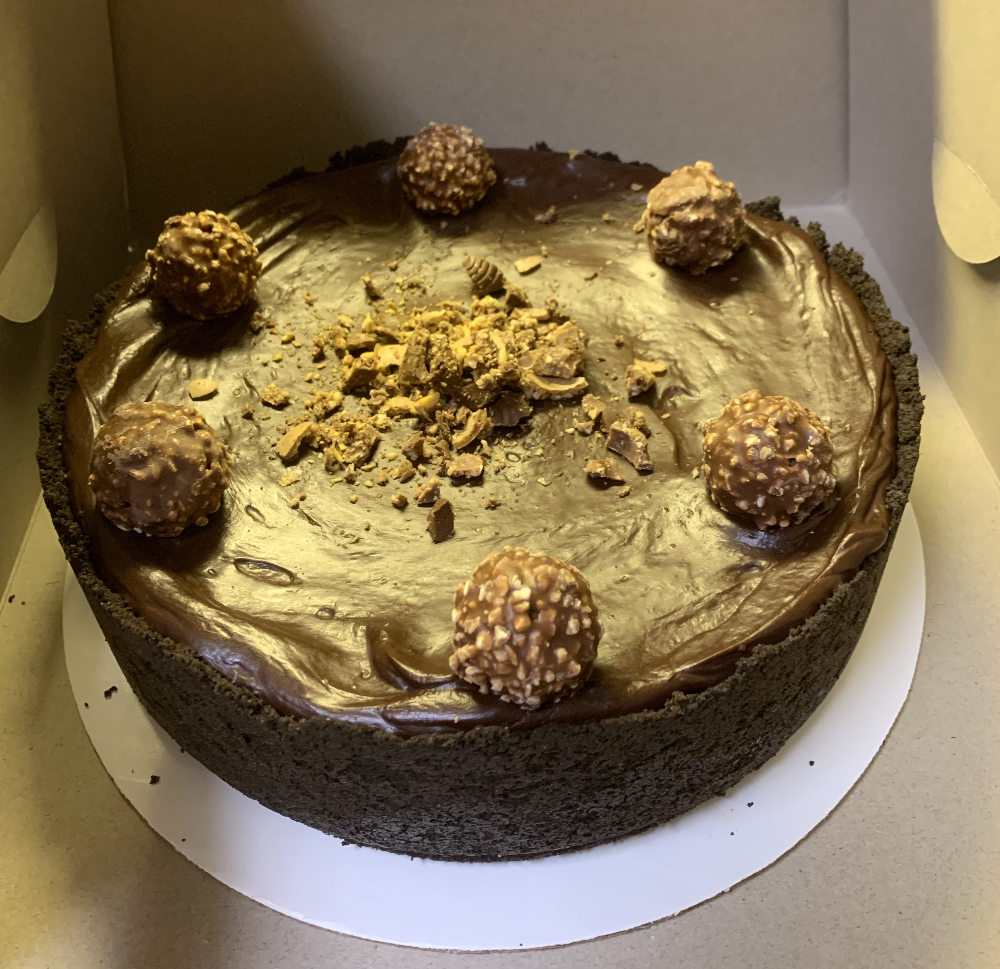

Ingredients
Directions
Preheat oven to 350 degrees. Set aside 2 loosely packed cups of coconut on a plate. Place remaining coconut in a food processor along with sugar, salt, and baking powder; process until finely ground. Add butter, and process just until no lumps remain. Add egg and vanilla; process just until smooth. Add flour; pulse until a crumbly dough begins to form, scraping sides of bowl as needed (do not overmix).
Forming 5 or 6 at a time, scoop level tablespoons of dough, and place in reserved coconut. Roll into balls, coating with coconut.
Arrange balls, about 2 inches apart, on baking sheets. Bake until lightly golden, 23 to 25 minutes. Cool on baking sheets 1 to 2 minutes; transfer to a wire rack to cool completely.
Ingredients
Directions
Preheat oven to 325°F (163°C). Line a 9-inch (23cm) springform pan with parchment paper in the bottom and grease the sides.
Combine the crust ingredients in a small bowl. Press the mixture into the bottom and up the sides of the springform pan.
Bake the crust for 8-10 minutes, then set aside to cool.
Ingredients
Directions
In a large bowl, beat the cream cheese, sugar and flour on low speed until well completely combined and smooth. Be sure to use low speed to reduce the amount of air added to the batter, which can cause cracks. Scrape down the sides of the bowl.
Add the Nutella and vanilla extract and mix on low speed until well combined.
Add the eggs one at a time, mixing slowly to combine after each addition. Scrape down the sides of the bowl as needed to make sure everything is well combined. The batter will be thick and a little sticky.
Pour the cheesecake evenly batter into the crust.
Place the springform pan inside another larger pan. Fill the outside pan with enough warm water to go about halfway up the sides of the springform pan. The water should not go above the top edge of the aluminum foil on the springform pan.
Bake for 1 hour 30 minutes. The center should be set, but still jiggly.
Turn off the oven and leave the door closed for 30 minutes. The cheesecake will continue to cook, but slowly begin to cool as well.